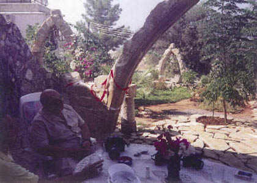

Özellikle 1990’lı yıllarda Rauf Denktaş’ı ziyarete gittiğimde, kendimi bir kuş cennetinde bulurdum. Muhabbet kuşları, papağan familyasından değişik türde kuşlar, adını sanını bilmediğim ama renklerine hayran kaldığım bir sürü kuş, odasında uçuşup dururdu. Omzuma konduklarında, ha kirletti ha kirletecek diye gözüm şaşı olur, konuşmalarım kopar giderdi.
Hatta bir defasında kuşlar yüzünden oda değiştirip, görüşmemize başka bir yerde devam etmiştik.
Kuşlarına hayrandı; bana her birinin özelliklerini anlatırdı. Bir defasında yazlık evinde, birkaç kelime öğrettiği papağanın ağzından, taklitler yaparak, sesler çıkararak bir kelime olsun almak istedi. Sonuç başarısız olunca, Denktaş’ın yüzü biraz asıldı. Haklıydı, o kadar emek verip konuşma öğretmişti, şimdi ise konuşturamıyordu.
Kuşlar renkliydi, kuşlar yumuşak ve nazikti, gürültü de yapmıyorlardı. İnsanı gerçekten dinlendiriyorlardı. O kadar yoğun, gürültülü ve çileli bir hayatta kuşlarla dostluk, onlarla yakınlık belki de bir kaçıştı. Sade, saf, temiz, rengârenk bir dünya. Gerçek dünyanın çirkinliklerinden, pisliğinden ve gürültüsünden çok farklı, huzura kaçış yolu.

Rauf Denktaş, Erol Manisalı’nın tek başına yaptığı kemerlerin yanında. Başkan en büyük kemerin açılışını henüz yapmış.
Kuşlar incitmez, kuşlar sövmez, kuşlar yalan söylemezler. Tatlı tatlı uçarlar ve şakırdarlar. İnsana başka bir dünya yaratırlar. Kısa bir süre için bile olsa bu Denktaş’a yetiyordu.
Ben böyle düşünüyordum ve haklı olduğuma inanıyordum.